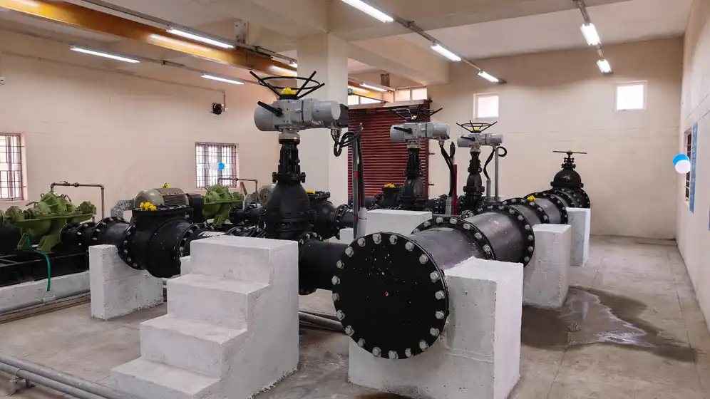
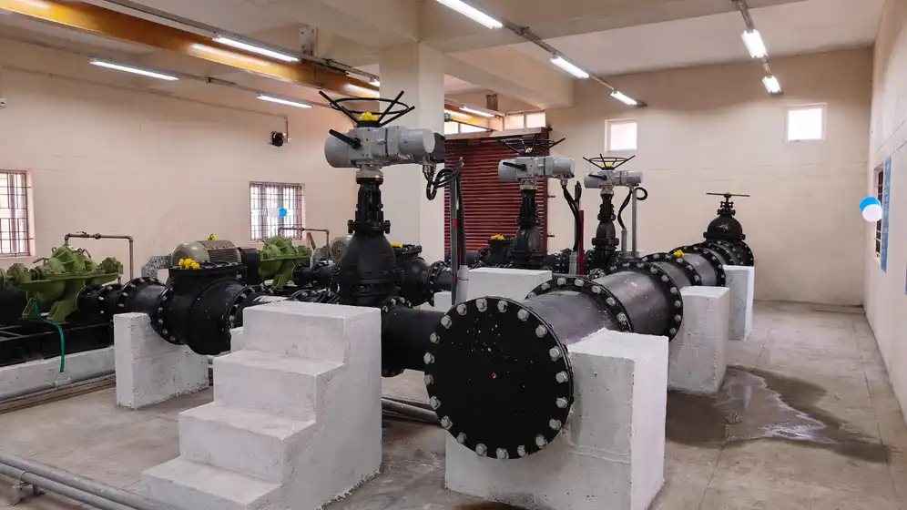

Knowledge & Study Centre at Namakkal
NTC Infra executed the construction of the Knowledge Centre and Study Centre at Kondichettypatty in Namakkal, envisioned as a dedicated hub for education, research, and skill development. Equipped with modern infrastructure and thoughtfully designed spaces, the Centre provides resources that support independent study, collaborative learning, and professional growth. Serving students, researchers, and the wider community, the facility fosters knowledge sharing, encourages academic excellence, and strengthens educational opportunities in the Namakkal region. By creating an environment that promotes continuous learning and development, the project contributes to the district’s long-term social and intellectual progress.
 
